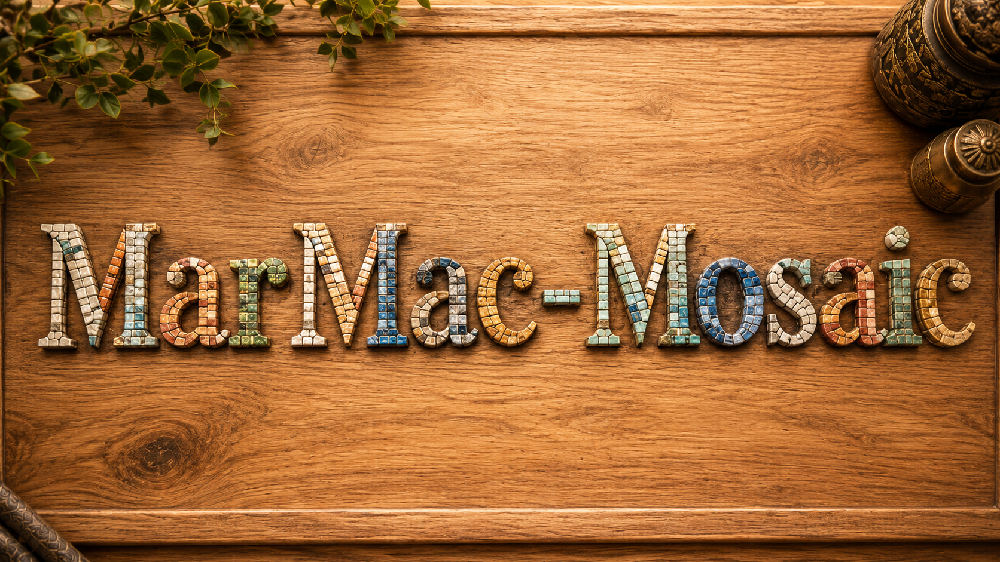

Personalisierte Mosaik-Porträts
Vom Foto zum Mosaik
Dein Porträt — Stein für Stein.
Aus einem persönlichen Foto entsteht ein handgesetztes Mosaik-Porträt — sei es eine geliebte Person, ein Haustier oder eine Ikone, die dich begleitet. Jedes Werk ist ein Unikat, gefertigt aus tausenden kleinen Glas-, Keramik- und Natursteinen.
(Dieser Text ist ein Platzhalter und wird später durch Martinas eigene Worte ersetzt.)
Bisherige Arbeiten
Eine Auswahl
Bald hier zu sehen.
Die hier gezeigten Werke der Kategorie Ikonen dienen als Inspiration — sie sind nicht zum Verkauf. Gerne fertige ich dir dein eigenes Mosaik-Porträt: Kontaktiere mich.
Über mich
Hinter jedem Stein steckt Geduld.
Mein Name ist Martina. Seit Jahren setze ich Mosaike aus Glas-, Keramik- und Natursteinen. Jedes Werk entsteht in Handarbeit — Stein für Stein, oft über Wochen hinweg.
Was mich am Mosaik fasziniert: aus tausenden winzigen Teilen entsteht ein einziges großes Porträt. Genau wie Erinnerungen, die ich für meine Kundinnen und Kunden in dauerhafte Kunst verwandle.
(Dieser Text ist ein Platzhalter und wird später durch Martinas eigene Worte ersetzt.)
Kontakt
Lass uns dein Mosaik-Porträt besprechen.
Schreib mir, welches Motiv dir vorschwebt — oder nutze direkt E-Mail oder WhatsApp.